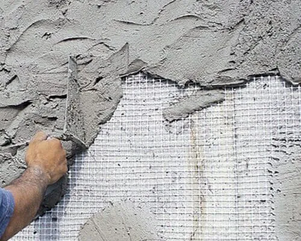
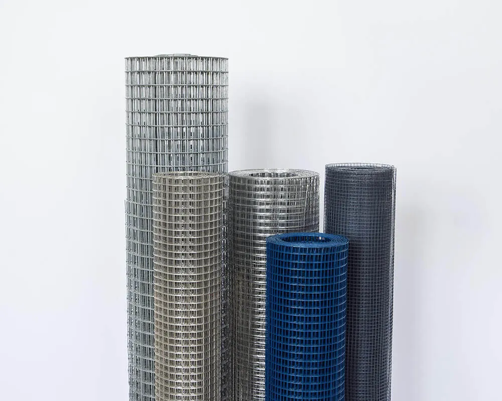
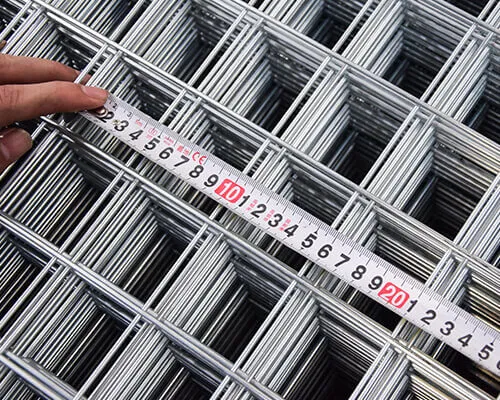
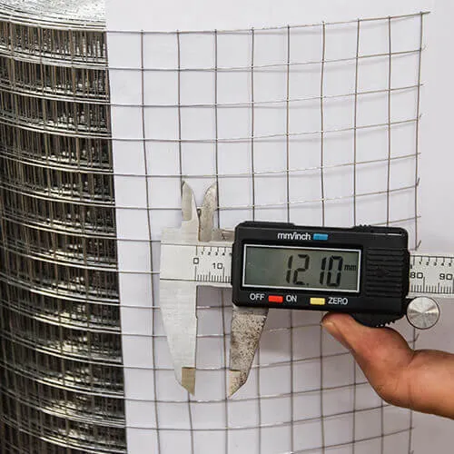
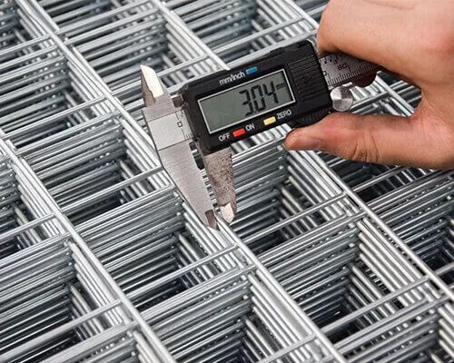
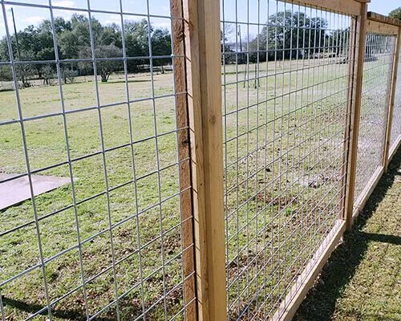

What is Welded Wire Mesh?
Welded wire mesh is a type of metal mesh made by welding the intersection points of metal wires together. It is commonly used for various purposes, including construction and fencing. Due to the strength and structural integrity of welded wire mesh, it serves as a versatile material for creating durable walls, partitions, and barriers.
Unlike woven wire mesh, where intersections are achieved through weaving, the intersections of welded wire mesh are joined through welding. This welding process provides welded wire mesh higher strength and stability.
What is Welded Wire Panel?
A welded wire panel is a metal mesh made by welding metal wires together, with a thicker diameter compared to the wires in a welded wire mesh roll. Welded wire mesh panels often have specific dimensions.
Welded wire mesh panels are widely used for fencing, safety barriers, and enclosures in residential and industrial environments. Their predetermined dimensions and pre-assembled features make them easy to install quickly in various settings.
What To Consider Before Sourcing From China?
Welded wire rolls and welded wire panels have wide applications and great market opportunity, presenting excellent opportunities for local distribution and brand establishment. However, there are details that need to be known before you proceed with actual wholesale procurement from China.

Welded Wire Mesh Applications
When wholesale welded wire products from China, the first thing to clarify is the application, distinguishing whether welded wire rolls or welded wire panels are needed.
Welded wire rolls, known for their flexibility and customization, are suitable for extensive installation, such as reinforcing concrete structures in buildings, agricultural fencing, and scenarios requiring bending and folding like animal enclosures and chicken coops.

On the other hand, welded wire panels, often used for small fixed surfaces, provide a ready-made solution for quick installations in applications such as fence construction, home decoration, and warehouse partitions.

How Is Welded Wire Mesh Specified?
After determining the usage scenarios for welded wire in your market, the next part is the specification of the welded wire mesh. Both welded wire rolls and welded wire panels come in different sizes and mesh dimensions.
For welded wire rolls, the wire diameter ranges from BWG 16 to BWG 23, with mesh hole opening sizes varying from 1/4×1/4 inches to 2×2 inches. Each roll has a length of 50 to 100 inches, and the height is customizable, with common heights being 36 to 48 inches.

Welded wire panels, which is designed for a sturdier structure, have thicker wire diameters and larger mesh hole opening sizes compared to welded wire rolls. The wire diameter ranges from 1.5 to 6mm, and mesh hole sizes vary from 25x25mm to 100x100mm. Length, width dimensions, and mesh shapes can be customized.

Welded Wire Material
Once you have identified the required welded wire and their applications and sizes in your market, selecting the most suitable metal wire material can also save costs by matching the application. The material of the welded wire is a significant aspect that should not be overlooked.
Each type of metal wire material has specific applications, and the choice depends on the unique requirements of the project. The factors we should look into include corrosion resistance, hardness, flexibility, and aesthetic preferences.
- Black Wire - Also known as black annealed wire, it is a soft iron wire product with enhanced oxidation resistance, uniform softness, consistent color, and greater flexibility compared to ordinary annealed wire.
- Electro Galvanized Wire - Coated with a thin layer of zinc through electroplating. It offers moderate corrosion resistance and is suitable for general applications requiring basic corrosion protection.
- Hot-Dipped Galvanized Wire - Immersed in molten zinc, forming a thicker coating with stronger corrosion resistance. Ideal for outdoor use, fencing, and construction projects where extended corrosion protection is needed.
- Bright Galvanized Wire - Known for increased hardness and a shiny surface, suitable for applications where both hardness and visual appearance are essential.
- PVC Coated Wire - Coated with PVC, providing both corrosion resistance and aesthetic appeal. Available in various colors, making it ideal for garden fencing and similar applications.
- Stainless Steel Wire - Known for corrosion resistance and durability, excellent for applications demanding superior corrosion performance. Commonly used in marine environments, food processing, and medical equipment.

Welding And Galvanizing Process
When it comes to welded wire mesh, there's one final point to emphasize: the sequence of galvanization and welding. The order of galvanizing and welding affects aspects such as corrosion resistance, welding integrity, and coating uniformity.
Galvanize Before Welding: This method involves galvanizing the metal wires before welding. Welded wire can undergo either electroplating or hot-dip galvanization before welding. This ensures a uniform and consistent layer of zinc on the welding wire, providing stable corrosion protection. However, the welding process may affect the galvanized layer, and welded points are exposed to the air without the protection of the galvanized layer.
Weld Before Galvanizing: In this method, the welded wire is first welded, and then galvanized. This approach allows for a more precise coverage of the zinc layer, evenly covering all areas, including forming zinc layers at the welding points. However, there may be variations in coating thickness, especially at the welding joint points.
The choice between galvanizing before welding and welding before galvanizing depends on the specific requirements of your local market and application projects.
"Understanding the differences between welded wire rolls and panels, along with proper material selection and manufacturing processes, is essential for successful wire mesh procurement from China."
Looking for high-quality welded wire mesh products for your market? At Kestrel Metal, we supply premium galvanized, PVC coated, and stainless steel welded wire mesh rolls and panels. Our experienced team provides technical support, custom specifications, and competitive pricing with worldwide shipping. Request a Quote today — we respond within 24 hours with detailed specifications and pricing for your project.